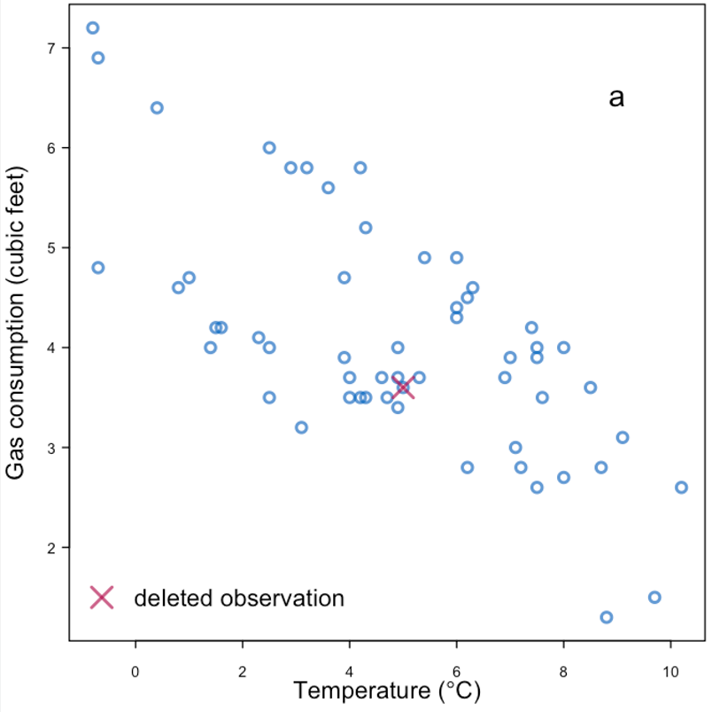
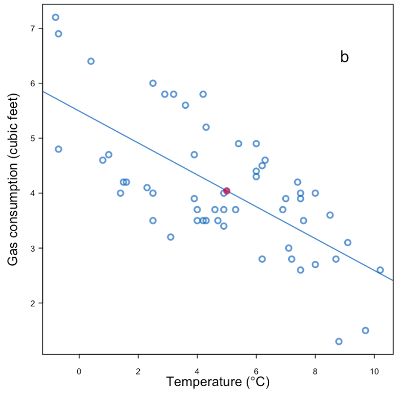
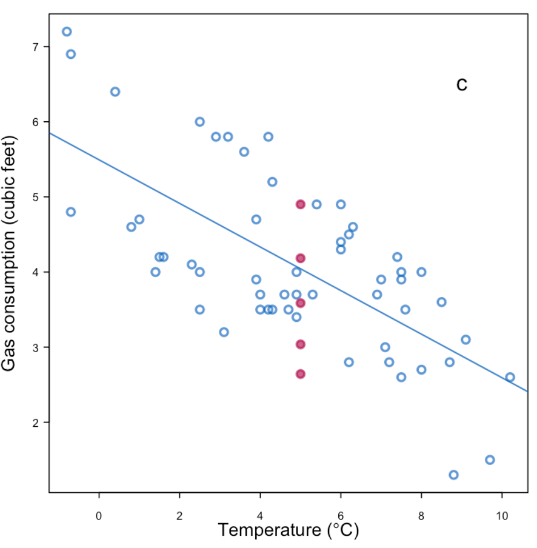
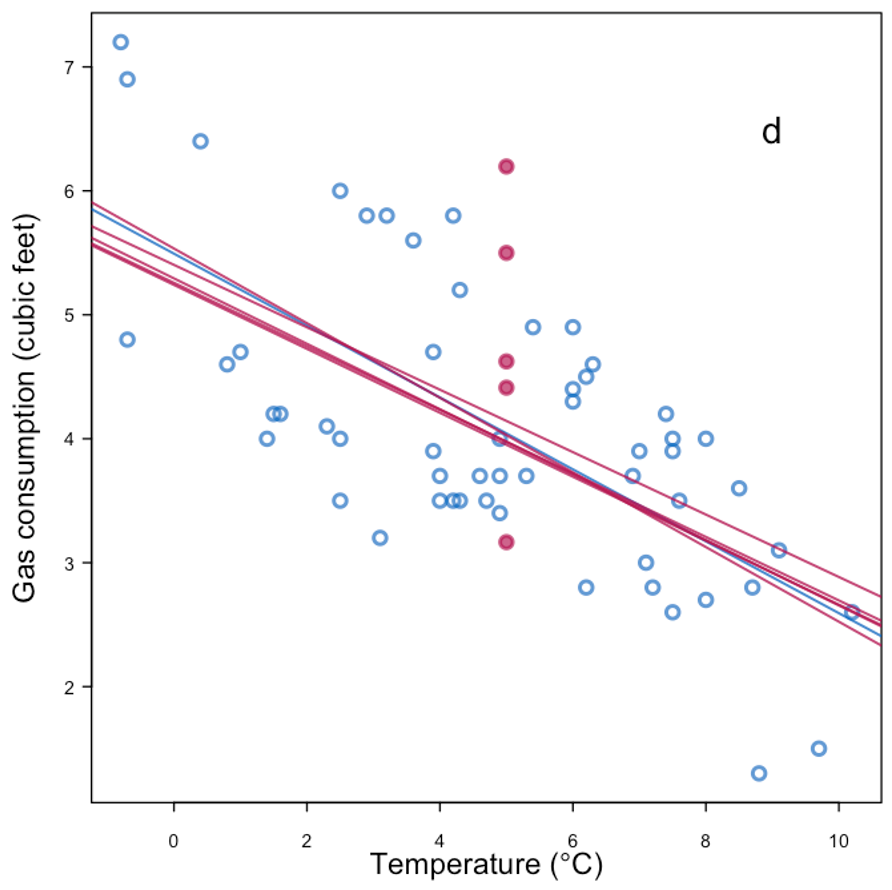
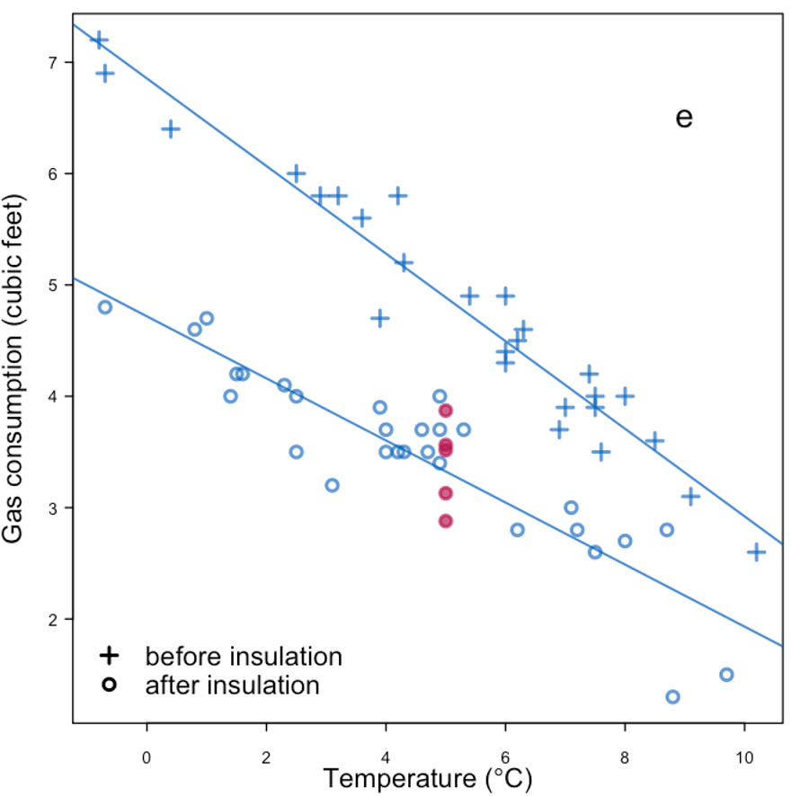
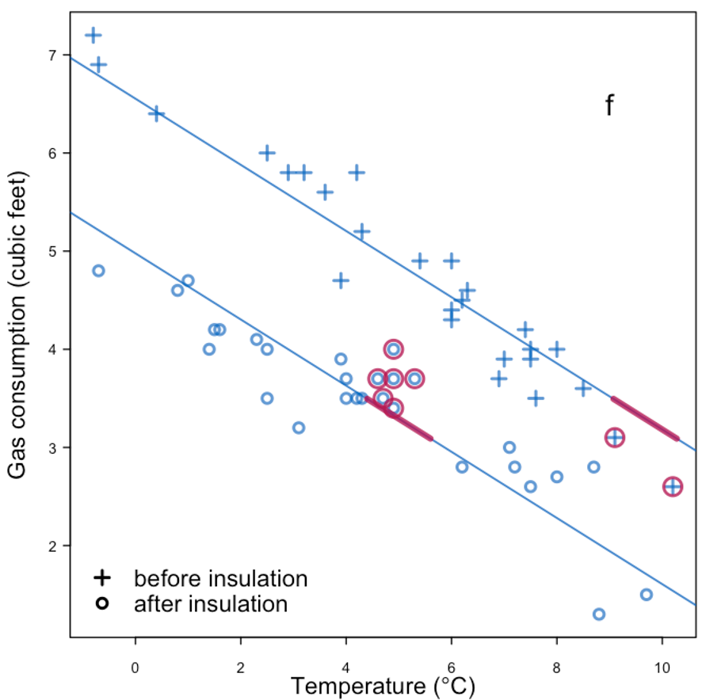
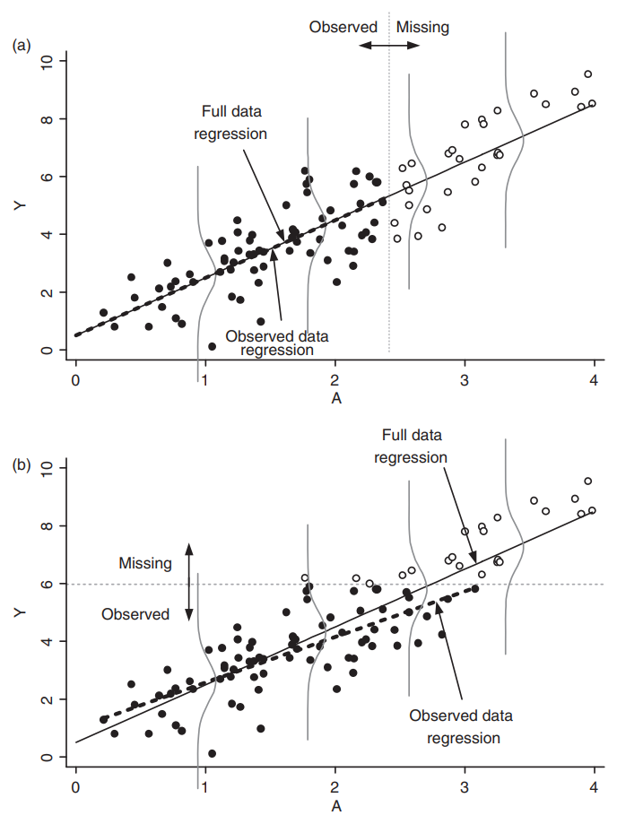

Handling missing data#
This document (briefly) introduces the concept, categorization, and treatment of missing data.
Classical categories of missing data#
If we know how the missing data are generated, so-called missing data mechanisms, we can take into account why data are missing in data analysis.
A particularly useful (and wide-known) framework for missingness categorizes missingness into the following three categories (Little and Rudin, 2019):
Caveat… the category namings are… confusing
MCAR (missing completely at random): how data are missing is independent with any aspect of the data
MAR (missing at random): how data are missing depends on observed quantities, so-called predictors, or independent variables
e.g., a person with certain characteristics (known) may not answer certain questions on a survey, imagine reporting salary for different socio-economic classes
e.g., for certain inputs, a simulation model may crash or produce nonsensical outputs
MNAR (missing not at random): how data are missing depends on the unobserved quantities
e.g., a pollutant sensor can only detect particles that are \(> 0.1\mu\mathrm{m}\)
e.g., storm surges only occur in areas that get below the water level
Understanding the causes of missing data helps designing algorithms to handle missing data. However, in reality, we often do not know the causes, or multiple causes exist in producing a data set.
Cautionary note: Where the data are missing matters, i.e., is a response value missing, is a predictor value missing, or do we not know what our analysis questions are yet?
Treatment of missing data#
Starting with an example of “completing the data”
 |
Replace with the mean |
|
|---|---|
 |
Replace with the mean + noise |
|
|---|---|
 |
Replace with the mean + noise + parameter uncertainty |
|
|---|---|
 |
More information + replace with mean + noise |
|
|---|---|
 |
Predictive mean matching |
|
|---|---|
 |
Example of missingness impacting analysis from Daniel et al. (2012), reproducing Figure 4 in the paper:
 |
|---|
Effect of missingness mechanism on data analysis. |
General rules for treating missing data:#
Under MCAR, focusing on complete cases or employing imputation methods tend to be sufficient.
Under MAR, some methods are valid choices:
If the missingness is independent of the response conditional on the predictor, linear regression is still “valid”.
Imputation methods tend to introduce biases, depending on the data analysis methods.
Under MNAR, the missingness should be explicitly modeled.
e.g., censored observations in survival analysis.
Imputation methods#
We introduce a (limited) list of imputation methods in this section, using the titanic dataset as an example:
import pandas as pd
import seaborn as sns
import matplotlib.pyplot as plt
pd.set_option('display.precision', 3)
titanic = sns.load_dataset('titanic', cache=True, data_home='dataset/')
Identifying missingness#
We have covered some basic ways how to identify missingness in the EDA module. Here is one other option with the help of missingno.
# !pip install missingno
# in case you need to install the package
titanic.info()
<class 'pandas.core.frame.DataFrame'>
RangeIndex: 891 entries, 0 to 890
Data columns (total 15 columns):
# Column Non-Null Count Dtype
--- ------ -------------- -----
0 survived 891 non-null int64
1 pclass 891 non-null int64
2 sex 891 non-null object
3 age 714 non-null float64
4 sibsp 891 non-null int64
5 parch 891 non-null int64
6 fare 891 non-null float64
7 embarked 889 non-null object
8 class 891 non-null category
9 who 891 non-null object
10 adult_male 891 non-null bool
11 deck 203 non-null category
12 embark_town 889 non-null object
13 alive 891 non-null object
14 alone 891 non-null bool
dtypes: bool(2), category(2), float64(2), int64(4), object(5)
memory usage: 80.7+ KB
import missingno as msno
# visualization of available/missing data
#msno.bar(titanic)
msno.matrix(titanic)
<Axes: >
Removing data#
We have discussed that removing data is typically not ideal, but nothing stops us from doing that…
# retaining titanic dataset with complete data
titanic_agecomp = titanic.dropna(subset='age', how='any')
titanic_agecomp.info()
<class 'pandas.core.frame.DataFrame'>
Index: 714 entries, 0 to 890
Data columns (total 15 columns):
# Column Non-Null Count Dtype
--- ------ -------------- -----
0 survived 714 non-null int64
1 pclass 714 non-null int64
2 sex 714 non-null object
3 age 714 non-null float64
4 sibsp 714 non-null int64
5 parch 714 non-null int64
6 fare 714 non-null float64
7 embarked 712 non-null object
8 class 714 non-null category
9 who 714 non-null object
10 adult_male 714 non-null bool
11 deck 184 non-null category
12 embark_town 712 non-null object
13 alive 714 non-null object
14 alone 714 non-null bool
dtypes: bool(2), category(2), float64(2), int64(4), object(5)
memory usage: 70.2+ KB
# comparing the correlation with / without missing data
corr = titanic.select_dtypes('number').corr()
corr_agecomp = titanic_agecomp.select_dtypes('number').corr()
# changes in correlation matrix with / without age missingness
corr - corr_agecomp
| survived | pclass | age | sibsp | parch | fare | |
|---|---|---|---|---|---|---|
| survived | 0.000 | 0.021 | 0.0 | -0.018 | -0.012 | -0.011 |
| pclass | 0.021 | 0.000 | 0.0 | 0.016 | -0.007 | 0.005 |
| age | 0.000 | 0.000 | 0.0 | 0.000 | 0.000 | 0.000 |
| sibsp | -0.018 | 0.016 | 0.0 | 0.000 | 0.031 | 0.021 |
| parch | -0.012 | -0.007 | 0.0 | 0.031 | 0.000 | 0.011 |
| fare | -0.011 | 0.005 | 0.0 | 0.021 | 0.011 | 0.000 |
# one other possibility (that includes boolean)
corr = titanic.corr(numeric_only=True)
corr_agecomp = titanic_agecomp.corr(numeric_only=True)
# changes in correlation matrix with / without age missingness
corr - corr_agecomp
| survived | pclass | age | sibsp | parch | fare | adult_male | alone | |
|---|---|---|---|---|---|---|---|---|
| survived | 0.000 | 0.021 | 0.0 | -0.018 | -0.012 | -0.011 | -0.004 | -0.007 |
| pclass | 0.021 | 0.000 | 0.0 | 0.016 | -0.007 | 0.005 | -0.005 | -0.011 |
| age | 0.000 | 0.000 | 0.0 | 0.000 | 0.000 | 0.000 | 0.000 | 0.000 |
| sibsp | -0.018 | 0.016 | 0.0 | 0.000 | 0.031 | 0.021 | 0.057 | 0.045 |
| parch | -0.012 | -0.007 | 0.0 | 0.031 | 0.000 | 0.011 | 0.013 | -0.006 |
| fare | -0.011 | 0.005 | 0.0 | 0.021 | 0.011 | 0.000 | -0.002 | -0.012 |
| adult_male | -0.004 | -0.005 | 0.0 | 0.057 | 0.013 | -0.002 | 0.000 | 0.008 |
| alone | -0.007 | -0.011 | 0.0 | 0.045 | -0.006 | -0.012 | 0.008 | 0.000 |
Simple imputation with a constant#
# !pip install scikit-learn
from sklearn.impute import SimpleImputer
constant_imputer = SimpleImputer(strategy='constant')
titanic_constant = titanic.copy()
# set constant, completing data
constant_imputer.fill_value = 3
titanic_constant['age'] = constant_imputer.fit_transform(titanic_constant[['age']])
# visualize completed data
sns.histplot(titanic_constant['age'])
<Axes: xlabel='age', ylabel='Count'>
titanic_median = titanic.copy()
# example with median, admitting only numeric columns
median_imputer = SimpleImputer(strategy='median')
titanic_median['age'] = median_imputer.fit_transform(titanic_median[['age']])
# another equivalent option
# titanic_median['age'] = titanic_median['age'].fillna(titanic_median['age'].median())
# visualize completed data
fig, ax = plt.subplots(1, 1)
sns.histplot(titanic_median['age'], binwidth=5, alpha=0.3, color='k', label='imputed w/ median')
sns.histplot(titanic['age'], binwidth=5, alpha=0.3, color='purple', label='unimputed')
ax.legend()
<matplotlib.legend.Legend at 0x3ffcec50>
Multiple imputation#
Multiple imputation is a technique to generate multiple realizations of imputation values, often modeled by a probability distribution.
One method is the multiple imputation by chained equations, or MICE. miceforest uses LightBGM as its training algorithm for MICE.
# !pip install -U miceforest plotnine
import miceforest as mf
# miceforest requires a real matrix.
# For illustrative purposes, we only use the numerical columns.
# set up a kernel to produce `num_datasets` imputed datasets
num_datasets = 4
kernel = mf.ImputationKernel(
data=titanic.select_dtypes('number'),
num_datasets=num_datasets,
save_all_iterations_data=False,
random_state=1
)
# run the MICE algorithm
kernel.mice(iterations=5)
# retrieve completed data
titanic_mf = kernel.complete_data
titanic_mf
<bound method ImputedData.complete_data of
Class: ImputationKernel
Datasets: 4
Iterations: 5
Data Samples: 891
Data Columns: 6
Imputed Variables: 1
Modeled Variables: 1
All Iterations Saved: False
>
# code for plotting mice completed dataset
def plot_hist(kernel, completed_titanic, original_titanic, num_plot):
num_datasets = kernel.num_datasets
num_plot = min(num_datasets, num_plot)
for k in range(num_plot): # 1, 2, 3, num_datasets
sns.histplot(completed_titanic(dataset=k)['age'], binwidth=5, stat='probability', color='k', label='imputed sample', alpha=0.3)
sns.histplot(original_titanic['age'], binwidth=5, stat='probability', color='purple', label='unimputed', alpha=0.2)
plt.title('{:d} realizations of imputed age'.format(num_plot))
plt.legend()
plt.tight_layout()
plt.show()
# retrieving each imputed dataset (recall that M in MICE means multiple)
import matplotlib.pyplot as plt
plot_hist(kernel=kernel,
completed_titanic=titanic_mf,
original_titanic=titanic,
num_plot=4)
# comparing the original and imputed dataset
fig, ax = plt.subplots(ncols=5)
for k, axi in enumerate(ax.flatten()):
if k < num_datasets:
sns.boxplot(titanic_mf(dataset=k)['age'], ax=axi)
else:
sns.boxplot(titanic['age'], ax=axi, color='purple')
plt.tight_layout()
kernel.mice(iterations=10)
kernel.plot_imputed_distributions()
Predictive mean matiching (MICE) [Last figure in the gas consumption example]#
kernel_pmm = mf.ImputationKernel(
data=titanic.select_dtypes('number'),
num_datasets=num_datasets,
mean_match_candidates=5,
random_state=1,
save_all_iterations_data=False
)
\(k\) Nearest Neighbor#
titanic_knn = titanic.select_dtypes('number').copy()
from sklearn.impute import KNNImputer
# set up imputing for KNN
knn_imputer = KNNImputer(n_neighbors=3)
titanic_knn_impute = knn_imputer.fit_transform(titanic_knn)
titanic_knn_df = pd.DataFrame(titanic_knn_impute, columns=titanic_knn.columns)
# visualize completed data
fig, ax = plt.subplots(1, 1)
sns.histplot(titanic_knn_df['age'], binwidth=5, stat='probability', alpha=0.3, color='k', label='knn imputation')
sns.histplot(titanic['age'], binwidth=5, stat='probability', alpha=0.3, color='purple', label='unimputed')
ax.legend()
<matplotlib.legend.Legend at 0x44fd0890>
Matrix completion#
Matrix completion typically assumes some low-rank structure within the dataset.
Examples of usage:
recommendation system (optional example).
image restoration
Alternating Least Squares
One particular algorithm that has garnered considerable interest is the Alternating Least Squares algorithm (Hastie et al., 2015).
Suppose we have a matrix \(R \in \mathbb{R}^{n\times p}\) that contains user ratings for items. The matrix completion or factorziation problem typically solves for some matrices \(X \in \mathbb{R}^{k\times n}, Y \in \mathbb{R}^{k\times p}\) such that \(R \approx X^\mathsf{T} Y\),
through the optimization problem
where \(P_\Omega\) is a projection that fills in (or discards) missing locations.
Observation:
\(\ell(X, Y)\) is non-convex.
\(\ell(X, Y)\) is bi-convex, meaning that fixing either \(X\), or \(Y\) leads to a convex function.
The bi-convexity leads to an alternating algorithm (for a full \(R\)). But the missing locations do introduce nuances to the algorithm. See details in Theorem 3.1 of Hastie et al. (2015).
(Exercise) Imputation of tips#
Consider the taxis dataset from seaborn, practice the imputation methods on the tip column for the dataset subtaxi_missing, given below:
Complete the data using
i. mean simple imputation, ii. median simple imputation, iii. k-nearest neighbor, and iv. predictive mean matching.Compute the root mean squared error for each imputation method (because you know the truth). Which one is the best in this case?
import seaborn as sns
taxi = sns.load_dataset('taxis')
taxi.info()
subtaxi = taxi.loc[:, ['passengers', 'distance', 'fare', 'tip', 'tolls', 'total']]
<class 'pandas.core.frame.DataFrame'>
RangeIndex: 6433 entries, 0 to 6432
Data columns (total 14 columns):
# Column Non-Null Count Dtype
--- ------ -------------- -----
0 pickup 6433 non-null datetime64[ns]
1 dropoff 6433 non-null datetime64[ns]
2 passengers 6433 non-null int64
3 distance 6433 non-null float64
4 fare 6433 non-null float64
5 tip 6433 non-null float64
6 tolls 6433 non-null float64
7 total 6433 non-null float64
8 color 6433 non-null object
9 payment 6389 non-null object
10 pickup_zone 6407 non-null object
11 dropoff_zone 6388 non-null object
12 pickup_borough 6407 non-null object
13 dropoff_borough 6388 non-null object
dtypes: datetime64[ns](2), float64(5), int64(1), object(6)
memory usage: 703.7+ KB
import numpy as np
# create missingness
np.random.seed(42)
mask1 = subtaxi.total > 25
mask2 = np.random.rand(subtaxi.shape[0]) < 0.7
subtaxi_missing = subtaxi.copy()
subtaxi_missing.loc[mask1 & mask2, 'tip'] = np.nan
msno.matrix(subtaxi_missing.sort_values('total'))
<Axes: >
References#
Daniel, R. M., Kenward, M. G., Cousens, S. N., & De Stavola, B. L. (2012). Using causal diagrams to guide analysis in missing data problems. Statistical methods in medical research, 21(3), 243-256.
Hastie, T., Mazumder, R., Lee, J. D., & Zadeh, R. (2015). Matrix completion and low-rank SVD via fast alternating least squares. The Journal of Machine Learning Research, 16(1), 3367-3402.
Little, R. J., & Rubin, D. B. (2019). Statistical analysis with missing data. John Wiley & Sons.
Van Buuren, S. (2012). Flexible imputation of missing data. Boca Raton, FL: CRC press.
Some useful additional resources#
Zangerle, E., & Bauer, C. (2022). Evaluating recommender systems: survey and framework. ACM Computing Surveys, 55(8), 1-38.